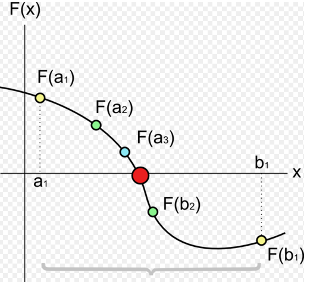

$$a_n\le r_n \le b_n$$
$$r_n = \frac{a_n+b_n}{2}, a_{n+1}= \begin{cases}
a_n & \text{si $f(a_n).f(r_n) \lt 0$}\\
r_n & \text{si $f(a_n).f(r_n) \gt 0$}
\end{cases},
b_{n+1}= \begin{cases}
b_n & \text{si $f(b_n).f(r_n) \lt 0$}\\
r_n & \text{si $f(b_n).f(r_n) \gt 0$}
\end{cases}
$$

For more information visit here